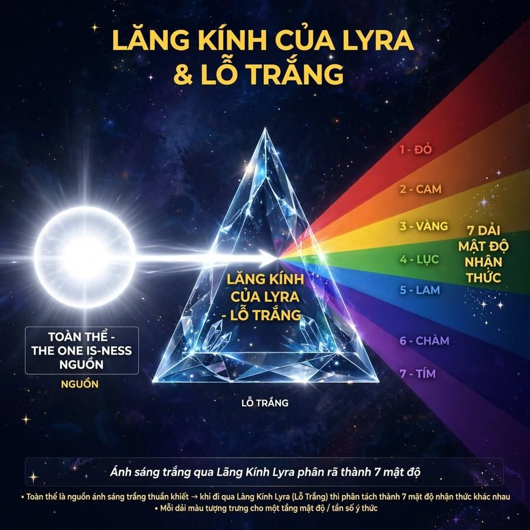
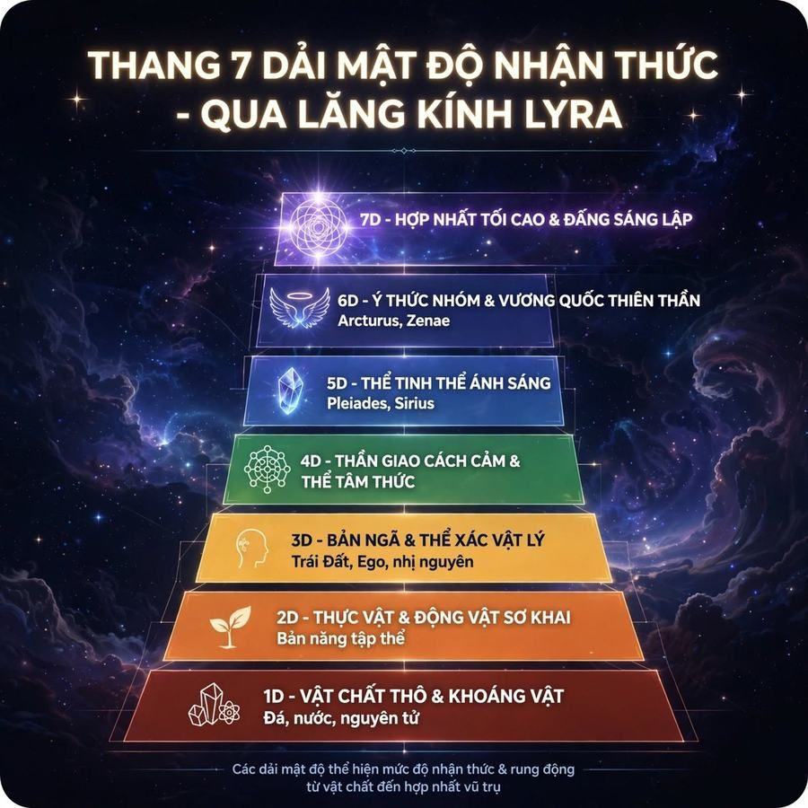
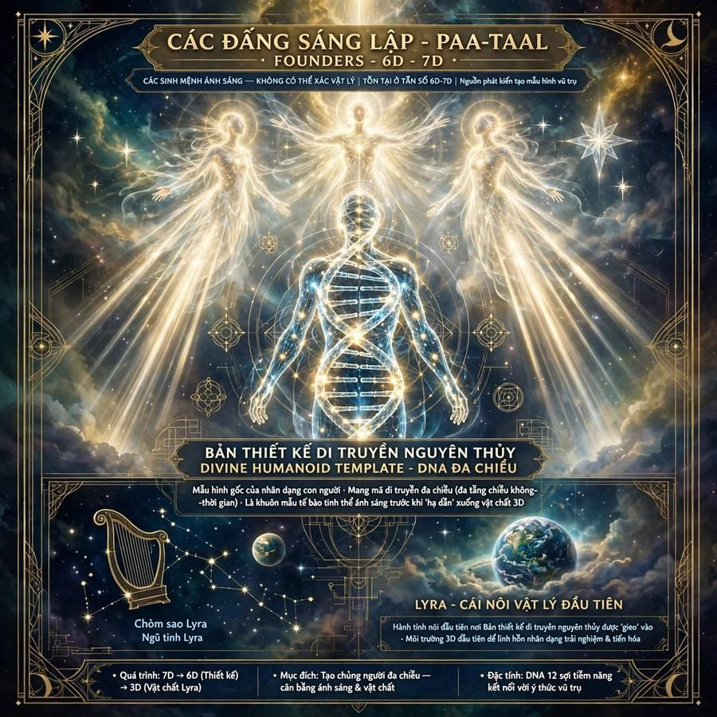
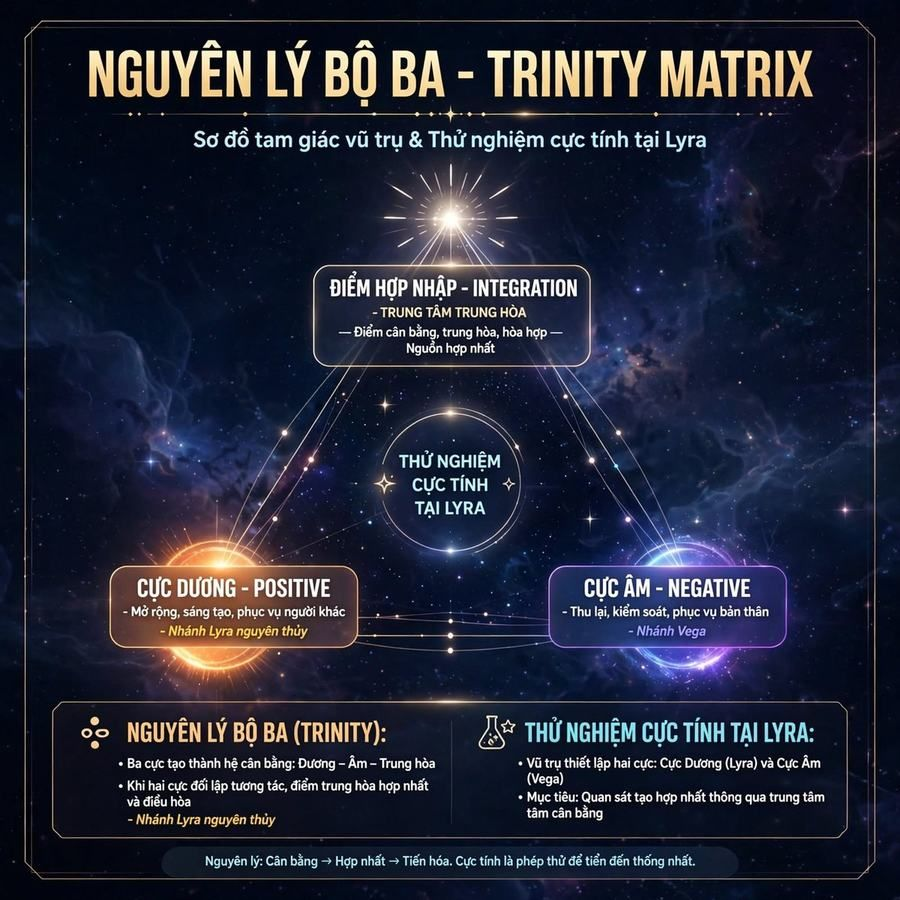

Trang chủ / Chuyên đề 1: Tiền Sử Thiên Hà / Kỳ 1
Chuyên đề 1 · Kỳ 1 / 90
SỰ KHAI MỞ VŨ TRỤ & BÍ ẨN LĂNG KÍNH CỦA LYRA (DIMENSIONAL INFUSION)

Bạn đã bao giờ dừng lại giữa đêm tĩnh lặng, ngước nhìn lên dải Ngân Hà rực rỡ và tự hỏi: Trước khi các hành tinh, các vì sao hay các nền văn minh thiên hà xuất hiện, Vũ trụ của chúng ta trông như thế nào? Ý thức của con người thực sự bắt nguồn từ đâu trong khoảng không vô tận? Và tại sao chòm sao Thiên Cầm (Lyra) lại được coi là "Cửa ngõ Khởi nguyên" — nơi ngọn lửa sự sống đầu tiên của gia đình hình người (Humanoid) được thắp sáng?
Hầu hết các trang sử khoa học bề nổi trên Trái Đất chỉ nhìn nhận nguồn gốc loài người trong khoảng vài trăm ngàn năm ngắn ngủi trên hành tinh này. Họ coi sự sống là một tai nạn sinh học ngẫu nhiên nảy mầm từ súp hữu cơ.
Tuy nhiên, đối với các hồ sơ giải mật thiên hà và các tài liệu truyền tin cổ xưa (như Lăng Kính Của Lyra, The Seeders, Andromedan Compendium), lịch sử loài người rộng lớn và tráng lệ hơn thế hàng tỷ lần.
Trước khi Cuộc Đại Di Cư (The Great Expansion) đưa loài người phân tán khắp các chòm sao Pleiades, Sirius, Orion hay Andromeda, ý thức của chúng ta đã trải qua một hành trình khai mở vĩ đại: Sự Thấm Nhập Chiều Không Gian (Dimensional Infusion) thông qua Lăng Kính Của Lyra!
Hãy cùng quay ngược dòng thời gian tuyến tính hàng tỷ năm để trở về cột mốc khởi nguyên của Vũ trụ, giải mã trọn vẹn bí ẩn về Lăng Kính Lyra, Sự Phân Rã 7 Dải Mật Độ, Sự Xuất Hiện của Các Đấng Sáng Lập (Founders) và Mầm Mống Cực Tính Đầu Tiên của Gia Đình Thiên Hà!
✦ ✦ ✦1. TRẠNG THÁI NGUYÊN THỦY: TOÀN THỂ (THE ONE IS-NESS) & KHÁO KHÁT TỰ TRẢI NGHIỆM
Để thấu hiểu tại sao Vũ trụ vật lý được hình thành, trước hết chúng ta phải đưa nhận thức vượt ra khỏi thời gian và không gian 3D, trở về với Trạng thái Khởi thủy Tối cao.
A. Toàn Thể Thuần Khiết (The Is-ness / The Source)
Trước khi vật chất, các vì sao hay dải Ngân Hà ra đời, tất cả mọi tồn tại đều chìm đọng trong một trạng thái duy nhất: Toàn Thể (The Absolute / The Source / Is-ness).
- Không có sự phân tách: Trong Toàn Thể, không có khái niệm "bạn" hay "tôi", không có "sáng" hay "tối", không có "quá khứ" hay "tương lai". Mọi tiềm năng, mọi tri thức và mọi dạng thức ý thức đều hợp nhất trọn vẹn làm MỘT trong dải ánh sáng trắng thuần khiết vĩnh cửu.
- Sự Tĩnh lặng Tuyệt đối: Đó là một trạng thái hoàn hảo nhưng hoàn toàn tĩnh lặng. Trong Toàn Thể, ý thức "biết" tất cả mọi thứ về mặt tiềm năng, nhưng lại chưa thể "trải nghiệm" những tiềm năng đó dưới dạng các góc nhìn cụ thể.
B. Khát khao Tự Nhận thức và Khởi sinh Ý tưởng Phân rã
Để trải nghiệm bản thân dưới hàng tỷ sắc thái đa dạng khác nhau, Ý thức Nguồn Tối cao đã đưa ra một quyết định vĩ đại: Tự Phân Rã Ý Thức (Cosmic Fragmentation).
- Nguồn muốn tạo ra một "Sân chơi Vũ trụ" — nơi mà các phân mảnh ý thức (các linh hồn) có thể quên đi nguồn gốc toàn hảo của mình, nhập thể vào các dải mật độ vật lý khác nhau, trải nghiệm sự tự do ý chí và sau đó tự tìm đường học hỏi để hợp nhất trở lại với Nguồn!
- Và để biến ý tưởng đó thành thực tại, Nguồn cần một "Cửa ngõ Chiều kích" — một lăng kính năng lượng có khả năng bẻ cong và phân rã Ánh sáng Thuần khiết thành các dải tần số rung động khác nhau. Cửa ngõ đó chính là Lăng Kính Của Lyra!

2. BÍ ẨN LĂNG KÍNH CỦA LYRA & HỆ THỐNG LỖ TRẮNG NĂNG LƯỢNG (WHITE HOLE)
Trong các tài liệu thiên hà cổ xưa, chòm sao Lyra không đơn thuần là một cụm sao vật lý mà chúng ta nhìn thấy qua kính viễn vọng ngày nay. Tọa độ của Lyra trong dải Ngân Hà mang một ý nghĩa vũ trụ học vô cùng thiêng liêng.
A. Lỗ Trắng Khởi Sinh (The White Hole Portal)
- Khái niệm Lỗ Trắng: Trong khi Lỗ Đen (Black Hole) là điểm hút vật chất và năng lượng nén lại, thì Lỗ Trắng (White Hole) chính là điểm phun trào năng lượng và ánh sáng cực mạnh từ các cõi giới siêu chiều đi vào thực tại vật lý.
- Lăng Kính Lyra như một Lăng Kính Quang học: Hãy tưởng tượng một chùm ánh sáng trắng thuần khiết chiếu qua một viên tinh thể lăng kính thủy tinh. Chùm ánh sáng trắng đơn sắc đó lập tức bị phân tách thành một dải quang phổ rực rỡ gồm 7 màu sắc cơ bản (Đỏ, Cam, Vàng, Lục, Lam, Chàm, Tím).
- Sự Phân rã Ý thức qua Lyra: Tương tự như vậy, khi dòng ý thức Toàn Thể tràn qua Lỗ Trắng tại vùng không gian Lyra, dải ý thức đơn nhất bị phân rã thành 7 Dải Mật Độ Nhận Thức (7 Densities of Consciousness). Từ khoảnh khắc đó, ảo giác về "sự tách biệt" và tính vật lý chính thức được khởi tạo!

3. THANG 7 DẢI MẬT ĐỘ NHẬN THỨC (THE 7 DENSITIES OF REALITY)
Khi đi qua Lăng Kính Của Lyra, Vũ trụ mới được kiến tạo không chỉ sinh ra các hành tinh hay khí gas, mà hình thành nên 7 dải tầng số dao động chính (mật độ) cấu tạo nên toàn bộ Đa vũ trụ:
- Mật độ Một (1D - Vật chất Thô & Khoáng vật):
- Trạng thái nhận thức như một điểm đơn lẻ. Đây là dải tần số của vật chất nền tảng: đá, khoáng vật, nước, nguyên tố hóa học và cấu trúc nguyên tử. Dù chưa có nhận thức cá thể, 1D cung cấp chiếc móng vững chắc cho vật lý.
- Mật độ Hai (2D - Thực vật & Động vật Sơ khai):
- Trạng thái nhận thức dạng đường thẳng. Đây là dải tần số của thảm thực vật, cây cỏ, vi sinh vật và các loài động vật vận hành theo bản năng tập thể. Cảm giác về bản ngã cá nhân bắt đầu phôi thai.
- Mật độ Ba (3D - Bản ngã Cá nhân & Thể xác Vật lý Thô):
- Trạng thái nhận thức thể tích (3 chiều). Đây là dải tần số của sự ảo tưởng về sự tách biệt, nơi bản ngã (Ego) phát triển mạnh mẽ nhất. Sinh mệnh trải nghiệm thể xác vật lý thô gốc Carbon, bài học về sự lựa chọn, thời gian tuyến tính và sự phân cực nhị nguyên (Tốt - Xấu, Đúng - Sai). Trái Đất của chúng ta đã nằm trong dải 3D này suốt hàng ngàn năm qua.
- Mật độ Bốn (4D - Nhận thức Thần giao Cách cảm & Thể Tâm thức):
- Trạng thái chuyển tiếp từ vật lý thô sang phi vật lý. Sinh mệnh làm chủ cảm xúc, phát triển khả năng thần giao cách cảm, nhận biết trực giác và thấu hiểu sự kết nối giữa các cá thể. Thời gian trở nên linh hoạt và nhịp đập tâm linh bắt đầu thức tỉnh.
- Mật độ Năm (5D - Thể Tinh thể Ánh sáng & Trí tuệ Thiên hà):
- Dải tần số chuẩn mực của đa số các nền văn minh thiên hà tiên tiến (như Pleiades, Sirius, Taygeta). Sinh mệnh mang cơ thể tinh thể ánh sáng (Silicon-Crystalline), hoàn toàn thoát khỏi bệnh tật, lão hóa hay sự khan hiếm vật chất. Nhận thức đạt đến trạng thái Tình yêu Vô điều kiện và Trí tuệ Siêu chiều.
- Mật độ Sáu (6D - Ý thức Nhóm & Vương quốc Thiên thần):
- Dải tần số của sự hợp nhất ý thức cá thể thành các tập thể ý thức lớn (Group Consciousness). Sinh mệnh tồn tại dưới dạng năng lượng thuần khiết, đóng vai trò như các nhà thiết kế di truyền, các đại sứ chữa lành hoặc các vị bảo hộ thiên hà (như Arcturus, Zenae).
- Mật độ Bảy (7D - Trạng thái Hợp nhất Tối cao & Đấng Sáng Lập):
- Dải tần số tiệm cận với Nguồn. Nơi mà mọi sự phân tách hoàn toàn tan biến, sinh mệnh nhận biết trọn vẹn mình chính là Toàn Thể, sẵn sàng bước qua quãng tám tiếp theo của Vũ trụ.

4. SỰ XUẤT HIỆN CỦA CÁC ĐẤNG SÁNG LẬP (FOUNDERS / PAA-TAAL) & NGUYÊN MẪU CHA MẸ
Ngay khi dải ý thức Toàn Thể đi qua Lăng Kính Của Lyra và phân rã vào dải mật độ cao (6D/7D), nhóm thực thể đầu tiên xuất hiện chính là Các Đấng Sáng Lập (The Founders / Paa-Taal / Intergalactic Confederation).
A. Họ là ai?
- Bản chất Phi vật lý: Các Đấng Sáng Lập không sở hữu thể xác vật lý thô. Họ là những tập thể ý thức năng lượng ánh sáng khổng lồ tồn tại ở dải mật độ 6D rất cao và 7D.
- Nguyên mẫu Cha Mẹ của Gia đình Thiên hà: Các Đấng Sáng Lập mang trong mình ký ức nguyên vẹn nhất về Nguồn. Họ đóng vai trò như những "người kiến tạo và giám hộ" cho sự tiến hóa của toàn bộ gia đình hình người (Humanoid) sắp được gieo mầm.
B. Nhiệm vụ Thiết lập Bản thiết kế Di truyền Nguyên thủy
- Các Đấng Sáng Lập nhận biết rằng, để các phân mảnh ý thức có thể nhập thể sâu vào dải mật độ vật lý thô (3D/4D) mà không bị mất kết nối vĩnh viễn với Nguồn, họ cần thiết kế một Chủ thể Di truyền Hoàn hảo (The Divine Humanoid Template).
- Bộ gen dạng người nguyên thủy được thiết kế với cấu trúc DNA đa chiều, chứa đựng các mã khóa kích hoạt luân xa, lòng từ bi, trực giác và khả năng tự chữa lành.
- Sau đó, các Đấng Sáng Lập đã chọn chòm sao Lyra làm "cái nôi vật lý đầu tiên" để gieo mầm mẫu di truyền này!

5. NGUYÊN LÝ BỘ BA (TRINITY MATRIX) & SỰ KHỔI ĐẦU CỦA THỬ NGHIỆM CỰC TÍNH (POLARITY EXPERIMENT)
Một trong những phát kiến sâu sắc nhất từ tài liệu Lăng Kính Của Lyra chính là cấu trúc Mô hình Bộ Ba (Trinity Model) trong sự sáng tạo.
A. Cấu trúc Tam Giác Vũ Trụ
Khi ý thức phân rã qua Lăng kính Lyra, nó tự động tạo ra một tam giác năng lượng gồm 3 đỉnh:
- Cực Dương (Positive / Expansion / Male Principle): Năng lượng hướng ngoại, mở rộng, sáng tạo, hành động và phục vụ người khác.
- Cực Âm (Negative / Contraction / Female Principle): Năng lượng hướng nội, thu lại, bảo tồn, độc lập và phục vụ bản thân.
- Điểm Hợp Nhập (Integration Point / Neutral Center): Đỉnh của tam giác — nơi mà hai cực Âm và Dương tìm thấy sự cân bằng hoàn hảo để nâng cấp nhận thức lên một tầng bậc mới!
B. Sự Khởi động Thử nghiệm Cực tính tại Lyra
- Để trò chơi trải nghiệm đạt đến độ phong phú tối đa, các chủng tộc sinh ra tại Lyra được cho phép khám phá các thái cực triết lý khác nhau.
- Nhánh Lyra nguyên thủy phát triển theo xu hướng cực dương (mở rộng, hòa hợp, sống tự do nông nghiệp).
- Trong khi đó, nhánh di cư sang hệ sao Vega sau này lại chọn khám phá cực âm (thu lại, kiểm soát, kỷ luật khắt khe và tập trung vào sức mạnh bản thân).
- Chính sự xuất hiện của hai góc nhìn triết lý đối lập này ngay từ buổi bình minh của Lyra đã đặt nền móng cho những cuộc tranh luận, cọ xát và sau này là các xung đột thiên hà tàn khốc!
6. TẠI SAO LYRA LẠI ĐƯỢC CHỌN LÀM NÔI KHỔI ĐẦU CỦA LOÀI NGƯỜI?
Tại sao giữa hàng trăm tỷ thiên hà và chòm sao, chòm sao Lyra lại được các Đấng Sáng Lập lựa chọn làm cái nôi đầu tiên cho loài người?
- Tọa độ Năng lượng Lý tưởng: Lyra sở hữu vị trí giao thoa giữa các tuyến đường địa từ vũ trụ (Galactic Ley Lines), nơi trường năng lượng Etheric vô cùng ổn định và trù phú, tạo điều kiện hoàn hảo cho các mầm sống sinh học phát triển.
- Cổng Xoáy Liên Chiều Tinh vân Ring: Vùng không gian Lyra chứa đựng Cổng Sao Tinh vân Ring (Ring Nebula Stargate) — một điểm kỳ dị không-thời gian cho phép năng lượng từ các chiều không gian cao hơn dễ dàng truyền dẫn xuống dải vật lý.
- Nơi Khởi đầu của Âm thanh & Âm nhạc Vũ trụ: Trong thần thoại cổ đại Trái Đất cũng như lịch sử thiên hà, Lyra mang biểu tượng "Cây đàn Lyre". Chính tại đây, bài hát nguyên thủy của sự sống (The Cosmic Song) đã được xướng lên, lan tỏa các dải sóng tần số đi khắp dải Ngân Hà!
7. LỜI KẾT: SỢI DÂY KẾT NỐI VĨNH HẰNG TRONG DNA CỦA BẠN
Sự hiểu biết về Sự Khai Mở Vũ Trụ & Lăng Kính Của Lyra không phải là một lý thuyết triết học xa xôi. Nó chạm thẳng vào bản thể tâm linh của mỗi con người Trái Đất:
- Bạn là một Phân mảnh Tinh khiết của Toàn Thể: Dù bạn đang sống trong thể xác 3D với bao nỗi lo toan thường nhật, linh hồn bạn từng đi qua Lăng Kính Lyra, từng mang trong mình ánh sáng thuần khiết của Nguồn. Sự cô đơn hay cảm giác tách biệt chỉ là một ảo giác tạm thời của trò chơi 3D!
- Ký ức Di truyền Lyra: Tất cả các chủng tộc người trong thiên hà (Pleiades, Sirius, Orion, Andromeda, Trái Đất) đều là những người anh em chung một dòng máu di truyền khởi nguyên từ Lyra.
- Sứ mệnh Hợp nhập Cực tính: Chúng ta có mặt trên Trái Đất ngày nay chính là để hoàn tất bài học vĩ đại đã bắt đầu từ thời Lyra: Học cách yêu thương, chấp nhận cả hai mặt sáng - tối, hợp nhất các cực tính để mở ra Kỷ nguyên Mới cho toàn thể Vũ trụ!